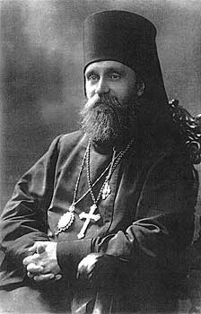

„Hoće li tko za mnom, neka se odreče samoga sebe, neka uzme svoj križ i neka ide za mnom.” (Mt 16,24)

Paul Kulbusch, rođen 1869. godine u današnjoj Estoniji, diplomirao je na Teološkoj akademiji u Sankt Peterburgu te postao ugledni svećenik Estonske pravoslavne crkve. Tijekom svoje službe u Sankt Peterburgu istaknuo se širenjem crkvenih institucija i izgradnjom novih hramova, poput crkve Svetog Izidora, te aktivnom suradnjom s drugim kršćanskim zajednicama. Njegov predani rad i ugled doveli su do toga da 1917. godine bude izabran i posvećen za biskupa Revala (Tallinna) pod imenom Platon.
Njegovo biskupstvo započelo je u iznimno burnom povijesnom razdoblju Prvog svjetskog rata i pada ruskog carstva. Platon je bio gorljivi zagovornik estonske neovisnosti, koju je čvrsto podupirao unatoč njemačkoj okupaciji i povlačenju ruskih trupa. Čak i u teškim ratnim uvjetima, neumorno je obilazio svoje župe na konju, nastojeći duhovno osnažiti narod u vremenima političke nestabilnosti i čestih promjena vlasti.
Tragičan kraj doživio je početkom 1919. godine tijekom boljševičke invazije na Estoniju. Dok se u Tartuu oporavljao od upale pluća, boljševici su ga uhitili i zatvorili, a 14. siječnja, neposredno prije nego što je estonska vojska oslobodila grad, pogubljen je u podrumu Kreditnog centra. Zbog svoje mučeničke smrti i nepokolebljive vjere, biskup Platon kanoniziran je kao sveti mučenik od strane više pravoslavnih crkava 2000. godine.